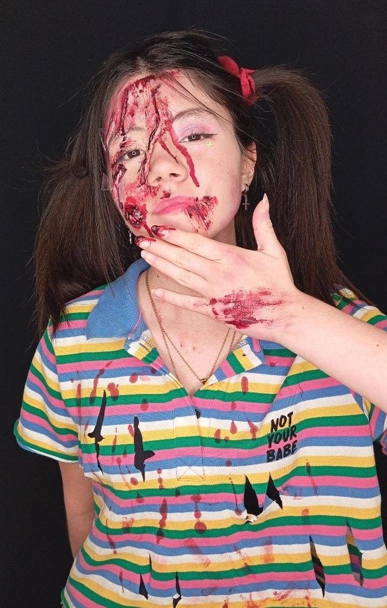

Efectos-Especiales


El maquillaje de efectos especiales es perfecto para lograr un alto impacto visual. No se trata solo de una técnica, sino de una forma de narrar una historia a través de la piel. Cada herida, textura o transformación cuenta lo ocurrido en el lugar y despierta la curiosidad del espectador, invitándolo a imaginar qué habrá pasado antes y después de ese instante. Es un arte que combina realismo, creatividad y narrativa visual, donde cada detalle tiene un propósito y cada mirada se convierte en parte de la historia.